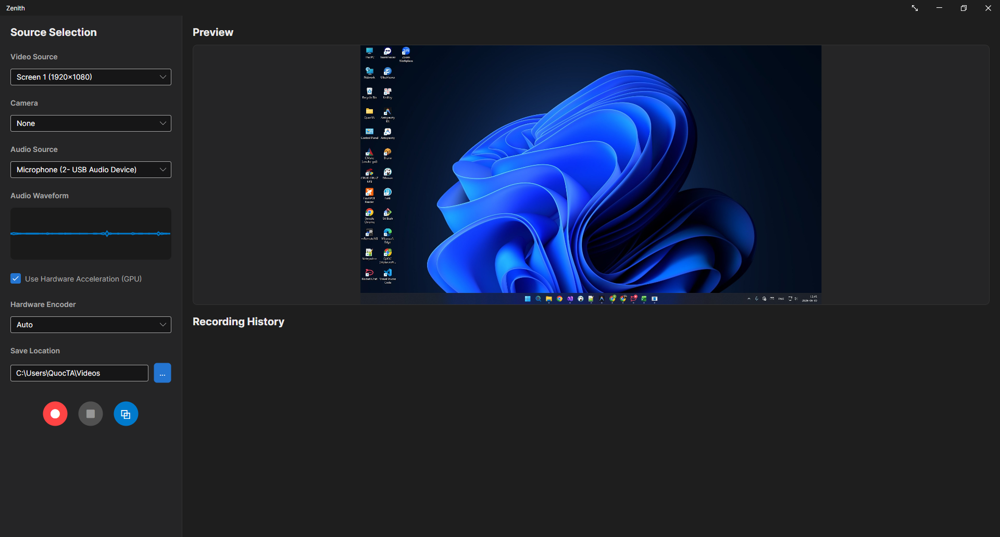

Record Your Screen,
Without the Lag.
The simplest, fastest way to record your screen on Windows, Mac, and Linux. No watermarks, no time limits, just pure performance.

Everything You Need, Nothing You Don't
Zenith is built to be lightweight and easy to use, so you can focus on creating, not configuring.
Lightning Fast
Enjoy buttery smooth recordings without slowing down your computer or dropping frames while gaming.
Works Everywhere
Whether you're on Windows, macOS, or Linux, Zenith delivers the exact same beautiful experience.
Region Selection
Precisely capture the area you need with an intuitive drag-to-select overlay.
Add Your Face
Easily overlay your webcam into any corner of the recording to give your videos a personal touch.
Stays Out of Your Way
Start recording and Zenith hides into a tiny floating widget, keeping your screen clutter-free while giving you full control.
Ready to Record?
Join the development or download the latest release of Zenith for your platform.